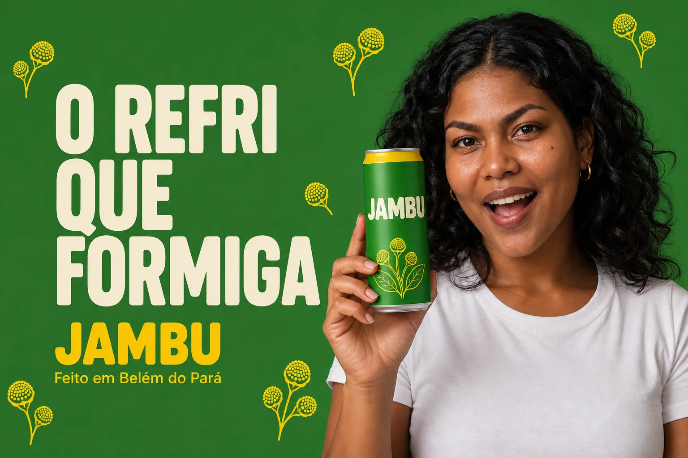
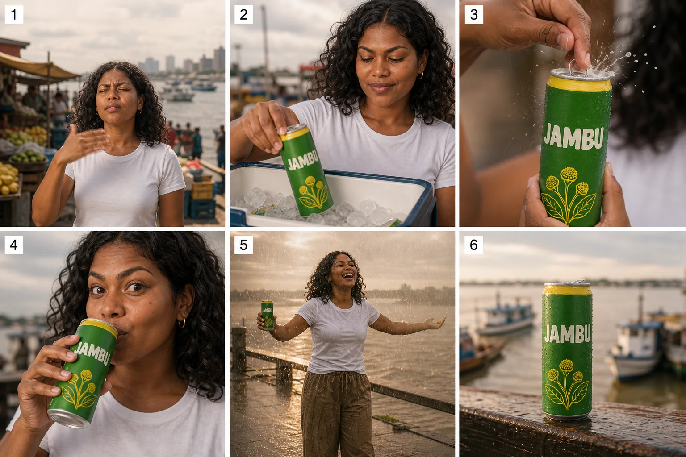
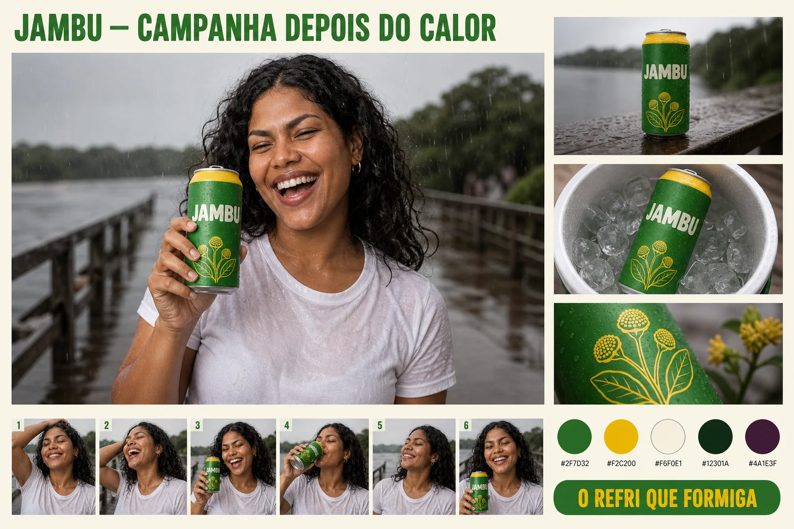

🏁 Projeto final: campanha Jambu
Ao terminar, você entrega uma campanha completa — 3 fotos de produto, 3 imagens da heroína com o produto, uma peça com texto, um infográfico e um storyboard — avaliada por uma rubrica e apresentada numa prancha para o cliente.
Tópicos
O que é
Uma página que fixa objetivo, público, conceito, tom e lista de entregáveis antes da primeira imagem.
Por que aprender
Sem briefing, cada imagem responde a uma pergunta diferente e a campanha não fecha.
Conceitos-chave
O briefing da campanha “Depois do calor” preenchido.
O que é
Três imagens da lata em ângulos e situações diferentes, todas editadas da mesma lata-base.
Por que aprender
Ângulos diferentes servem a usos diferentes: herói, cardápio/feed, detalhe de textura.
Conceitos-chave
Ângulo baixo, zenital e macro de perfil, com o uso de cada um.
O que é
A Maíra com a lata em três contextos do conceito, todas editadas da imagem-base dela.
Por que aprender
É a prova de consistência de personagem: mesma pessoa, lugares e luzes diferentes.
Conceitos-chave
Barco, chuva e noite — e o bloco de texto que descreve a lata sem a imagem dela.
O que é
Uma peça publicitária com nome, slogan e cores HEX, e um infográfico com rótulos legíveis.
Por que aprender
É onde o modelo que escreve texto corretamente substitui horas de diagramação — e onde um erro de grafia derruba a peça.
Conceitos-chave
Outdoor “O refri que formiga” e o infográfico “Como o Jambu formiga”.

Outdoor com sloganO que é
O storyboard de 6 quadros do comercial, com os quadros-chave ampliados.
Por que aprender
É o que liga as imagens estáticas ao vídeo da próxima etapa da campanha.
Conceitos-chave
Reaproveitar o storyboard do 3-1 e o que ele precisa mostrar para ser aprovado.

O que é
A ordem de produção das peças e a lista de conferência antes de mostrar ao cliente.
Por que aprender
A ordem certa evita retrabalho: tudo parte das duas bases aprovadas.
Conceitos-chave
Passo a passo da produção e checklist de 12 itens.
O que é
Critérios com pesos e três níveis para avaliar a própria campanha (ou a de um colega).
Por que aprender
Avaliar por critério transforma “achei bonito” em feedback que dá para corrigir.
Conceitos-chave
Tabela de 6 critérios × 3 níveis.
O que é
Uma prancha que mostra a campanha como sistema: conceito, heroína, produto, marca e sequência.
Por que aprender
O cliente decide pelo conjunto; peças soltas numa pasta parecem trabalho inacabado.
Conceitos-chave
A prancha da campanha Jambu e o roteiro de 5 minutos para apresentá-la.

🛠 Prática guiada
a sua campanha, peça por peça
🏠 Lição de casa
Pasta da campanha: briefing, 2 bases, 3 produto, 3 heroína + produto, peça com texto, infográfico, storyboard + quadros ampliados, rubrica preenchida e a prancha — cada imagem com o prompt exato ao lado.